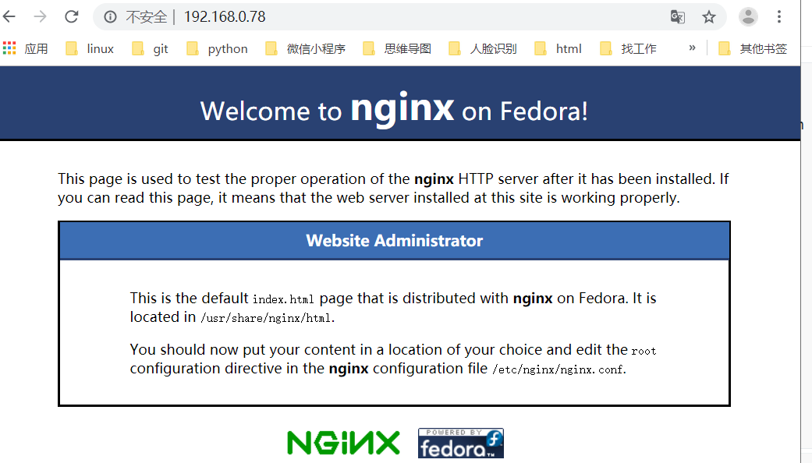

Nginx的安装部署
Nginx的安装
yum 安装
使用epel源安装
- [root@RouterB ~]# yum install epel-release -y
- [root@RouterB ~]# yum install nginx -y
使用nginx官方源安装
1
2
3
4
5
6
7
8
9
10
11
12
13
14
15
16
17
18
19
20
21
22
23
24
25
26
27
28
29
30
31
32
33
34
35
36
37
38
39
40
41
42
43
44
45
46
47
| [root@changsha ~]# cd /etc/yum.repos.d/ ----进入yum 仓库文件的目录
[root@changsha yum.repos.d]# ls
CentOS-Base.repo CentOS-Sources.repo
CentOS-CR.repo CentOS-Vault.repo
CentOS-Debuginfo.repo epel.repo
CentOS-fasttrack.repo epel-testing.repo
CentOS-Media.repo
[root@changsha yum.repos.d]# vim nginx.repo ---新建nginx.repo仓库文件
[root@changsha yum.repos.d]# cat nginx.repo
[nginx-stable] -----表示源（仓库）的名字
name=nginx stable repo --源的描述
baseurl=http://nginx.org/packages/centos/$releasever/$basearch/
------具体源的URL位置
gpgcheck=1 -----对源里的软件在安装的时候进行安全检查
enabled=1 ----表示这个源矿业使用 1可以使用 0禁用
gpgkey=https://nginx.org/keys/nginx_signing.key
-----进行检查的密钥文件
[nginx-mainline]
name=nginx mainline repo
baseurl=http://nginx.org/packages/mainline/centos/$releasever/$basearch/
gpgcheck=1
enabled=0
gpgkey=https://nginx.org/keys/nginx_signing.key
[root@changsha yum.repos.d]# yum install nginx
|
编译安装
下载源码
1
2
3
4
5
6
7
8
9
10
11
12
13
14
15
16
17
| [root@changsha yum.repos.d]# mkdir /nginx
----新建目录，存放源码文件
[root@changsha yum.repos.d]# cd /nginx
[root@changsha nginx]# ls
[root@changsha nginx]# yum install wget -y
-----wget 是linux下的下载软件（相当于linux下的迅雷）
[root@changsha nginx]# wget http://nginx.org/download/nginx-1.15.11.tar.gz ----用wget下载 源码
[root@changsha nginx]# ls -----得到了源码
nginx-1.15.11.tar.gz
|
解压安装
启动、停止、重启nginx服务
1
2
3
4
5
6
| [root@changsha yum.repos.d]# service nginx start -----启动
Redirecting to /bin/systemctl start nginx.service
[root@changsha yum.repos.d]# service nginx stop ----停止
Redirecting to /bin/systemctl stop nginx.service
[root@changsha yum.repos.d]# service nginx restart ----重启
Redirecting to /bin/systemctl restart nginx.service
|
如何知道nginx 已经启动？
1.查看端口号80有没有开启
1
2
3
4
5
| [root@changsha yum.repos.d]# lsof -i:80
COMMAND PID USER FD TYPE DEVICE SIZE/OFF NODE NAME
nginx 4214 root 6u IPv4 77272 0t0 TCP *:http (LISTEN)
nginx 4215 nginx 6u IPv4 77272 0t0 TCP *:http (LISTEN)
[root@changsha yum.repos.d]#
|
1
2
3
4
5
6
7
8
9
10
11
12
13
14
15
| [root@changsha yum.repos.d]# netstat -anplut
Active Internet connections (servers and established)
Proto Recv-Q Send-Q Local Address Foreign Address State PID/Program name
tcp 0 0 0.0.0.0:80 0.0.0.0:* LISTEN 4214/nginx: master
tcp 0 0 0.0.0.0:22 0.0.0.0:* LISTEN 918/sshd
tcp 0 0 127.0.0.1:25 0.0.0.0:* LISTEN 1183/master
tcp 0 52 192.168.0.42:22 192.168.0.33:50162 ESTABLISHED 3948/sshd: root@pts
tcp6 0 0 :::22 :::* LISTEN 918/sshd
tcp6 0 0 ::1:25 :::* LISTEN 1183/master
udp 0 0 0.0.0.0:41632 0.0.0.0:* 3900/dhclient
udp 0 0 0.0.0.0:68 0.0.0.0:* 3900/dhclient
udp 0 0 127.0.0.1:323 0.0.0.0:* 641/chronyd
udp6 0 0 :::10087 :::* 3900/dhclient
udp6 0 0 ::1:323 :::* 641/chronyd
[root@changsha yum.repos.d]#
|
2.查看进程
1
2
3
4
5
| [root@changsha yum.repos.d]# ps aux|grep nginx
root 4214 0.0 0.0 46364 964 ? Ss 11:21 0:00 nginx: master process /usr/sbin/nginx -c /etc/ngin/nginx.conf
nginx 4215 0.0 0.1 46764 1924 ? S 11:21 0:00 nginx: worker process
root 4252 0.0 0.0 112676 984 pts/2 R+ 11:32 0:00 grep --color=auto nginx
[root@changsha yum.repos.d]#
|
关闭防火墙服务
1
2
3
4
5
6
| [root@changsha yum.repos.d]# service firewalld stop ---停止服务--》马上停止
Redirecting to /bin/systemctl stop firewalld.service
[root@changsha yum.repos.d]# systemctl disable firewalld----设置firewalld 下次开机的时候不要启动
Removed symlink /etc/systemd/system/multi-user.target.wants/firewalld.service.
Removed symlink /etc/systemd/system/dbus-org.fedoraproject.FirewallD1.service.
[root@changsha yum.repos.d]# iptables -F
|
访问Web的服务器
1
2
3
4
5
6
7
8
9
10
11
12
13
14
15
| [root@changsha yum.repos.d]# ip add
1: lo: <LOOPBACK,UP,LOWER_UP> mtu 65536 qdisc noqueue state UNKNOWN qlen 1
link/loopback 00:00:00:00:00:00 brd 00:00:00:00:00:00
inet 127.0.0.1/8 scope host lo
valid_lft forever preferred_lft forever
inet6 ::1/128 scope host
valid_lft forever preferred_lft forever
2: ens33: <BROADCAST,MULTICAST,UP,LOWER_UP> mtu 1500 qdisc pfifo_fast state UP qlen 1000
link/ether 00:0c:29:95:0d:b7 brd ff:ff:ff:ff:ff:ff
inet 192.168.0.78/24 brd 192.168.0.255 scope global dynamic ens33
valid_lft 6740sec preferred_lft 6740sec
inet6 fe80::57a9:541f:2c1f:5587/64 scope link
valid_lft forever preferred_lft forever
[root@changsha yum.repos.d]#
|

补充